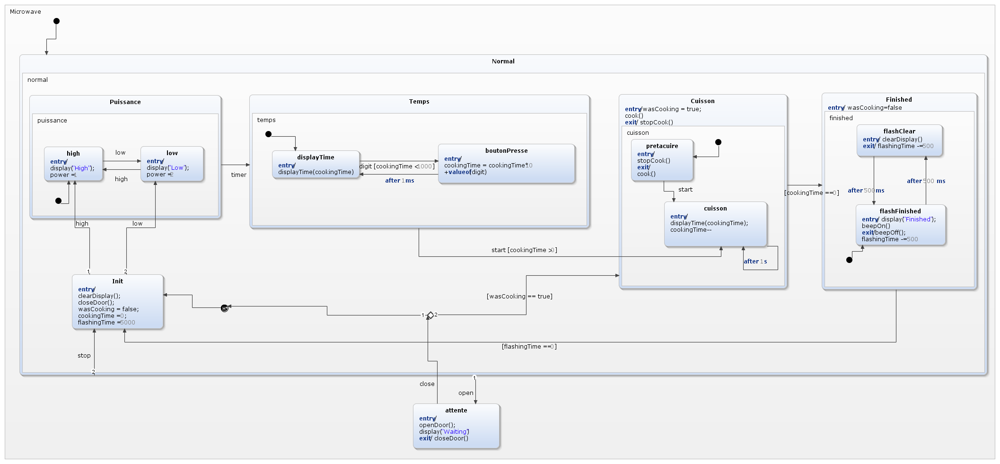

IFT 3911 - Devoir 1
Information générale
Nom: Ethan Mai
Matricule: 20146981
Courriel: ethan.mai@umontreal.ca
temps mis:
Nom: Samuel Boucher
Matricule: 20115109
Courriel: samuel.boucher.1@umontreal.ca
temps mis: 18 heures
Nom: Jean-Loup Bergeron
Matricule: 20134672
Courriel: jean-loup.bergeron@umontreal.ca
temps mis:
Distribution des tâches
Soumetteur: Samuel
|
Tâche
|
Ethan
|
Samuel
|
Jean-Loup
|
|
Réseau de Pétri
|
50%
|
50%
|
|
|
Statechart
|
|
100%
|
|
|
Design du logiciel
|
|
|
|
|
Qualité du design
|
|
|
|
Sommaire
Réseau de Pétri
Réseau
Graphe de couverture
Analyse
À partir du graphe de couverture, on constate que le cycle
peut se répéter à l'infini et que tout les états du système
sont accessible à partir de l'état initial.
Le réseau n'est pas borné car il y a deux omegas dans le graphe
de couverture.
Lois de conservation
-
M(Tunnel de MTL à Rive Sud) + M(Tunnel de Rive Sud à MTL)
+ M(Droit d'accès tunnel) = 1
-
M(Lumière MTL) + M(Lumière Rive Sud) = 1
Dans tous les états possibles de notre réseau de Petri,
ces deux équations sont respectées.
La première équation montre qu'il est impossible qu'il y
ait plus d'un véhicule dans le tunnel à la fois. Soit il y
a un véhicule du côté MTL à Rive Sud, soit le tunnel est vide
(droit d'accès) ou soit un véhicule est du côté Rive Sud à MTL.
La deuxième équation montre qu'il est impossible que les deux
lumières soient allumées en même temps.
La propriété de conservation est donc respectée: Le système
est fiable et les ressources sont bien utilisées.
Équité du système
Il ressort du graphe de couverture ci-haut qu'il est impossible de
faire entrer deux fois de suite un véhicule du même côté
du tunnel. Il faut absolument une alternance entre le
côté Rive Sud et le côté MTL.
Vivacité: Chaque transition peut être franchie au moins une
fois à partir de M0. Chaque transition peut être franchie
exactement 1 fois de suite. Chaque transition a donc une vivacité L1.
Interblocage: Il est apparent du graphe de couverture ci-haut qu'il
est impossible d'arriver dans un état d'interblocage car à partir
de n'importe quel état il est possible d'aller dans un autre état.
Famine: Il n'y a pas de situation de famine car il n'y a qu'une
seule branche et que celle-ci fait une alternance entre l'entrée
du côté MTL et l'entrée du côté Rive Sud.
Statechart

-
Nous avons présumé de l'énoncé de la question que le nombre créé par
les chiffres entrés après avoir fait "timer" représentent un
entier entre 1 et 9999 secondes. Le micro-ondes affichera 9999
secondes comme "99:99".
-
Nous avons présumé, pour modéliser un four à micro-ondes réel, que
la sonnerie sonne en alternance (on, off...) en suivant l'affichage
qui clignote.
-
Nous avons présumé qu'à n'importe quel moment où on ouvre la porte,
on affiche "Waiting" et les boutons ne font rien pendant qu'on
est en attente. Lorsqu'on ferme la porte, on revient dans l'état
où on se trouvait avant.
-
eg. si on était dans l'état "Temps" et qu'on ouvre la porte,
si on appuie sur des chiffres pendant que la porte est ouverte
le temps de cuisson ne changera pas.
-
eg. si on était rendu au clignotement du message
"Waiting" à la fin de la cuisson, on retourne dans cet
état et on y reste pour le nombre de secondes qu'il restait
avant de le quitter.
-
Nous avons compris du bouton stop qu'il nous fait revenir à la case
départ (état "Init") peu importe où on était dans l'exécution normale
du micro-ondes. Le bouton n'a pas d'effet si la porte est ouverte parce
que le système au complet est en attente.
Design du logiciel
Qualité du design
Couplage et cohésion des modules
Fardeau
Graphe IA
Justifications de l'application des principes de conception